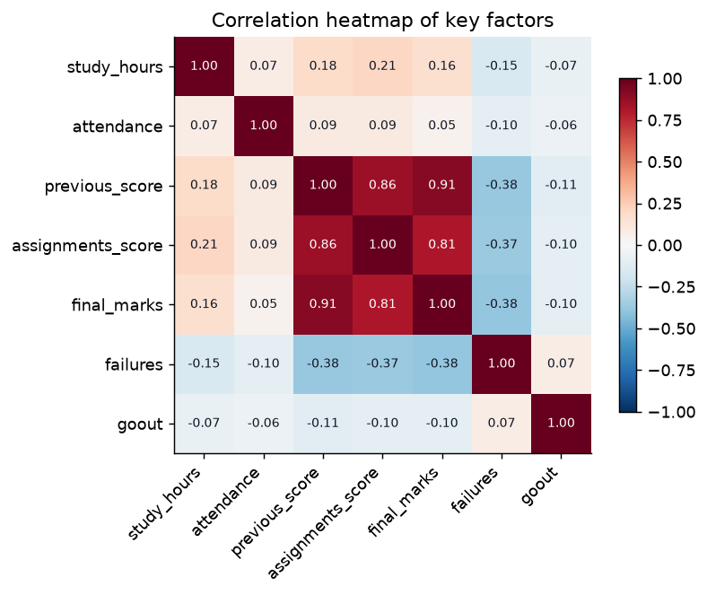
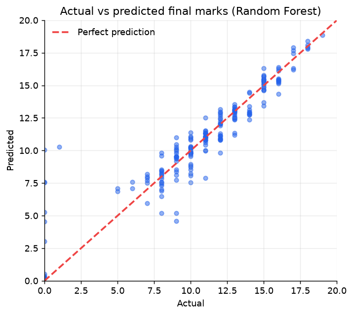
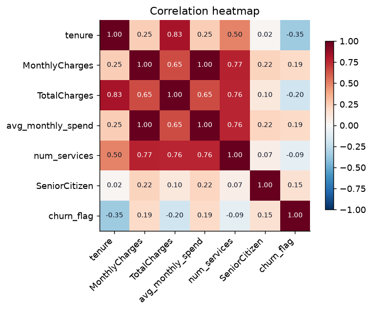

Phase 1 — Requirements Analysis
First 15 days · 4 project tasks · complete any 3 · deliverables, datasets and results below.
Task catalogue & status
How each project maps to the required pipeline
| Pipeline stage | Task 1 | Task 2 | Task 3 | Task 4 |
|---|
Datasets used — source & rationale
| Task | Dataset | Source | Size | Why this dataset |
|---|
Evaluation criteria (as specified in the brief)
Regression tasks
- Task 1 — MAE, RMSE
- Task 2 — MAE, MSE, R²
NLP task
- Task 3 — match score (%), ranking quality, shortlist
Classification task
- Task 4 — Accuracy, Precision, Recall, F1, Confusion Matrix
Sales Forecasting System
Analyse historical sales and predict future sales with machine learning.
Dataset
Store Sales — Favorita grocery chain
Why this dataset
It is a real multi-store retail transaction log with 3M rows across 4.5 years — genuine
trend, weekly and yearly seasonality rather than a synthetic toy series. The brief asks for
Date, Sales and optional Product/Category/Region;
family maps to category and store_nbr to region/store, so every required
column is covered. Large enough to make MAE/RMSE meaningful.
Pipeline steps performed
Exploratory data analysis
Sales trend over time
Monthly totals (red = best, green = worst)
Seasonality by calendar month
Average sales by day of week
Model performance
Evaluation metrics (hold-out: last 90 days)
| Model | MAE | RMSE |
|---|
MAE / RMSE comparison
Prediction
Actual vs predicted — last 90 days
Forward forecast — next 30 days
Student Performance Predictor
Predict a student's final marks from academic and personal factors.
Dataset
UCI Student Performance (Cortez & Silva)
Column mapping to the brief's schema
| Required column | Real variable |
|---|---|
| Study Hours | studytime → hours/week |
| Attendance | absences → attendance % |
| Previous Score | G2 |
| Assignments Score | G1 |
| Final Marks (target) | G3 |
| Gender / parent education | sex, Medu, Fedu |
Pipeline steps performed
Exploratory data analysis
Correlation heatmap

Study hours vs final marks
Average final marks by attendance band
Distribution of final marks
Correlation of each feature with final marks
Random Forest — feature importance
Model performance
Evaluation metrics
| Model | MAE | MSE | R² |
|---|
Actual vs predicted

Interactive predictor
A compact linear model fitted on the four headline features lets you explore how each factor moves the predicted final mark. Move the sliders to see the effect live.
AI Resume Screening System
Read resumes, compare them to a job description with NLP, and rank / shortlist candidates.
Dataset & job description
Resume Screening Dataset
Why this dataset
It provides full resume text with real candidate names across 45 job roles, plus a matching
job description and a human select/reject decision — so the NLP pipeline works on realistic,
unstructured CV content and can be sanity-checked against a ground-truth label. A PDF→text
round-trip demo (3 resumes rendered to PDF and re-parsed with pypdf) covers the
brief's "convert PDFs into text" requirement.
Pipeline steps performed
Ranking & results
Top 15 candidates (green = shortlisted)
Match-score distribution
Skill coverage — top candidate:
Full ranking list
| Rank | Candidate | Match % | Skills | Status |
|---|
Customer Churn Prediction System
Predict whether a customer will leave (churn) or continue using the service.
Dataset
IBM Telco Customer Churn
Why this dataset
It is the industry-standard churn benchmark (7,043 real telecom customers) containing every field the
brief requests — demographics, subscription plan, tenure, MonthlyCharges,
TotalCharges, service usage and a clean Yes/No Churn label. Its moderate
class imbalance (≈26% churn) makes Precision/Recall/F1 meaningful rather than trivial.
Pipeline steps performed
Exploratory data analysis
Churn distribution
Churn rate by tenure
Monthly charges vs churn
Correlation heatmap

Model performance
Metrics by model
| Model | Accuracy | Precision | Recall | F1 | ROC-AUC |
|---|
Model comparison
Confusion matrix (best model)
ROC curves
Top churn drivers (Random Forest importance)
Interactive churn risk calculator
Uses the exported logistic-regression coefficients (with the training scaler) to score a hypothetical customer in real time.
Submission Package
What the brief requires for final submission, and where each item stands.
Checklist
Repository structure produced
phase1_internship/ ├── data/ # sourced datasets + provenance ├── task1_sales_forecasting/ # sales_forecasting.py + artifacts/ ├── task2_student_performance/ # student_performance.py + artifacts/ ├── task3_resume_screening/ # resume_screening.py + artifacts/ ├── task4_churn_prediction/ # churn_prediction.py + artifacts/ ├── web/ # this dashboard (index.html, styles.css, app.js, assets/) └── reports/ # Phase 1 report, LinkedIn post, submission checklist
Reproduce everything
pip install -r requirements.txtpython download_data.pypython task1_sales_forecasting/sales_forecasting.pypython task2_student_performance/student_performance.pypython task3_resume_screening/resume_screening.pypython task4_churn_prediction/churn_prediction.py